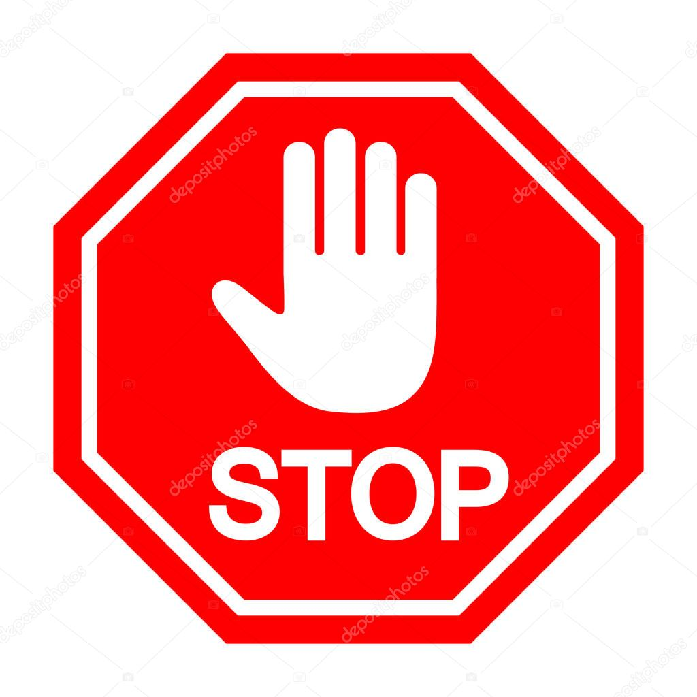

¿QUÉ ES El CIBERACOSO?
El ciberacoso o acoso virtual es una forma de acechamiento sobre una víctima que se da a través del uso de las tecnologías de la información y de la comunicación digital. Así pues, es aquella forma de acosar a alguien haciendo uso de Internet y de las redes sociales, sin necesidad de que el acosador establezca un contacto “real” o físico con la víctima, pues no requiere de cercanía.
Este acoso online es especialmente destructivo a nivel emocional y tiene una elevadada incidencia entre los jóvenes, con unas conductas de acechamiento que se producen principalmente a través de las redes sociales o los servicios de mensajería instantánea, con campañas de humillación, propagación de mentiras, difusión de fotos íntimas, suplantaciones de identidad, amenazas, filtración de información privada
TIPOS DE CIBERACOSO
1. Ciberacoso sexual
El ciberacoso sexual es aquel que se basa en la perpetración de conductas amenazantes y coercitivas de contenido sexual. Las mujeres son quienes sufren más esta forma de acoso virtual, recibiendo mensajes e incluso imágenes no deseadas de naturaleza sexual.
2. Cibermobbing
El cibermobbing es una forma de acoso laboral que se da a través de Internet. Suele ser entre compañeros de trabajo, pero también se superiores a subordinados o de subordinados a superiores, con campañas de humillación que buscan que la víctima abandone su puesto.
3. Ciberbullying
El ciberbullying es una de las formas de ciberacoso más comunes. Es aquella forma de acoso en la que compañeros de clase de la víctima la acechan fuera del centro educativo a través de Internet.
4. Sextorsión
La sextorsión es una forma de ciberacoso en la que el acechador chantajea a la víctima para obtener algo a cambio bajo la amenaza de publicar imágenes íntimas de la misma a las cuales tiene acceso ya sea porque ella se las envió voluntariamente (puede ser un ex resentido) o porque ha hackeado sus cuentas.
5. Ciberviolencia de género
La ciberviolencia de género es toda aquella forma de maltrato psicológico que se da través de las redes sociales o medios de comunicación digital sobre una víctima en base de su identidad sexual, sexo o género.
6. Grooming
El Grooming es una forma de ciberacoso sexual que se perpetra por parte de un adulto hacia un menor de edad. El acosador, haciendo uso de las redes sociales, contacta con menores de edad, muchas veces haciéndose pasar por otro menor de edad, con intenciones sexuales que generalmente se basan en conseguir imágenes o vídeos de la víctima.
7. Ciberacoso inmobiliario
El ciberacoso inmobiliario es aquel que se da en el contexto de una vinculación domiciliaria entre acosador y víctima. Los propietarios de una vivienda usan los medios de comunicación digital y las redes sociales para acechar a sus inquilinos con el objetivo, generalmente, de que abandonen el edificio o que rescindan el contrato de alquiler antes de lo que se había estipulado.
8. Fraping
El fraping es una forma de ciberacoso en la que una persona o bien hackea nuestras cuentas para tomar las riendas de nuestras redes sociales y así publicar contenido (siempre con el propósito de conseguir algo a cambio de devolvérnoslas) o bien crea un perfil falso en el que se hace pasar por nosotros, en cuyo caso busca humillarnos o arruinar nuestra reputación.
9. Ciberstalking
El ciberstalking es, en resumidas cuentas, el acechamiento repetitivo y reiterado de las redes sociales de una persona. El acechador controla, de una forma patológica, todos los pasos que da la víctima y que publica a través de sus redes sociales para así conocer su rutina y toda la información necesaria para, en un futuro, extorsionarla o incluso intentar un acechamiento físico.
10. Ciberacoso por denigración
El ciberacoso por denigración hace referencia a la situación en la que alguien empieza a difundir información despectiva, sea falsa o no, sobre otra persona, que se convierte en la víctima.

RECOMENDACIONES PARA PREVENIR EL CIBERACOSO
1.- Mantener los perfiles de las redes sociales en modo privado
2.- Utilizar contraseñas con un alto nivel de seguridad
3.- Informarse acerca de las políticas de uso que publica cada plataforma digital Es importante no dejarse llevar por la pereza y conocer qué aceptan y qué no las normas de comportamiento de cada espacio virtual. Si hay un comportamiento irrespetuoso y que no cumpla esas normas se podrá informar a los responsables, moderadores, administradores o proveedores del servicio.
4.- Aprovechar la función de bloqueo Es una constante en las diferentes redes sociales y permite prohibir el acceso a aquellos usuarios que envíen mensajes inapropiados o extraños antes de que la situación empeore o derive en un caso más de ciberacoso.
5.- Asegurarse de tener un buen antivirus y cortafuego
6.- Utilizar un modelo de cámara con luz piloto Esta pequeña aplicación indicará cuándo el dispositivo está o no grabando. Así será posible evitar la intrusión de terceros que puedan realizar grabaciones no autorizadas.
7.- Tener precaución al compartir información personal en Internet Es fundamental la custodia de los datos personales, ya se trate de la dirección, el teléfono, el nombre o los apellidos.
8.- No responder a provocaciones de un posible acosador La única excepción es que sea para informarle de que lo que está haciendo tiene se considera delito. Ante todo, es recomendable no entrar en el juego, ni replicar sus mismas actuaciones a modo de respuesta.
9.- Compartir las inquietudes con amigos, padres o incluso terceros Es importante explicar y buscar ayuda si se considera que una situación podría llegar a desencadenar un daño o un caso de acoso. Atajar una situación a tiempo es evitar un problema.
10.- Guardar todo lo que se considere una posible prueba de ciberacoso Ya sea un email, una conversación por chat o incluso una publicación online. Podrían resultar de ayuda si se decidiera denunciar los hechos más adelante.